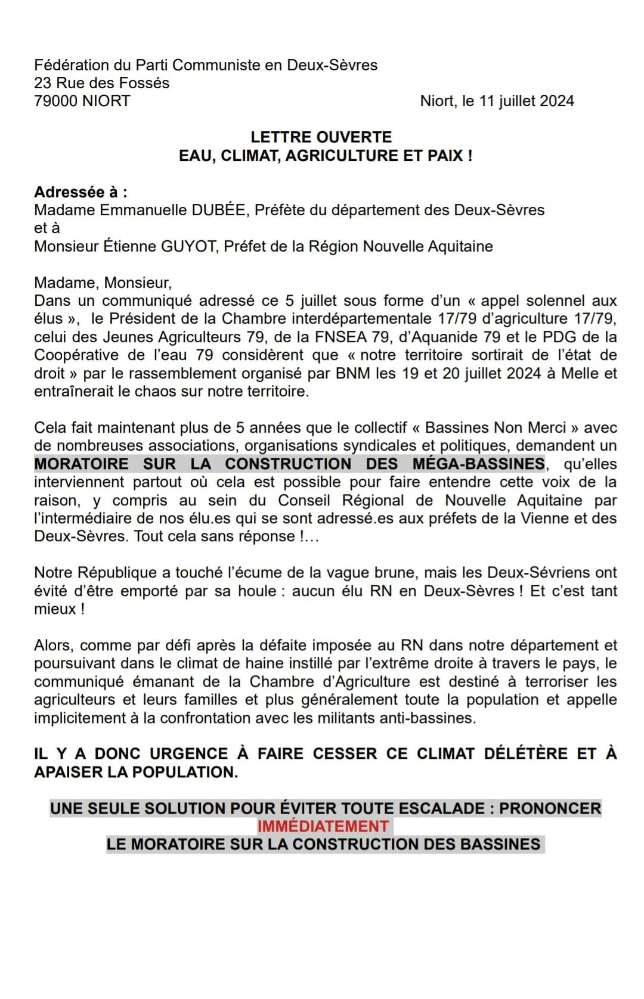
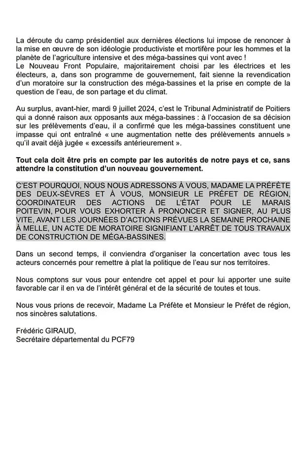

Lettre ouverte du PCF 79
« Eau, climat, agriculture et paix ! » Notre lettre ouverte du 11 juillet
Date indiquée par Facebook · 11 juillet 2024
Repères éditoriaux
Nous avons demandé à la préfète des Deux-Sèvres et au préfet de la région Nouvelle-Aquitaine de prononcer un moratoire sur la construction des mégabassines avant les journées d’action annoncées à Melle. Les deux pages reproduisent la lettre signée par Frédéric Giraud.
Texte conservé avec la publication
Lettre ouverte adressée ce jour par mail à Mme la Préfète des Deux-Sèvres et au Préfet de la région Nouvelle Aquitaine.
#PCF
#deuxsevres
#NoBasaran


Sources
Archive rouge · export Facebook · AR-0002-FB-01322
À lire aussi · Au Village de l’eau à Melle, notre stand pour un moratoire sur les mégabassines